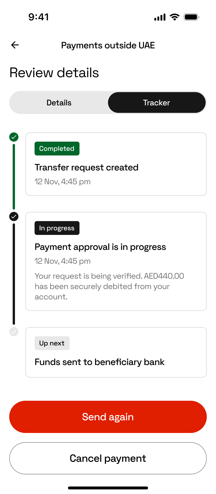

Where's my money?
Designing transfer tracking for the SWIFT MT→MX migration. Once a customer hit “send,” their money vanished into the SWIFT network for hours or days, and the app answered with a single word: pending. This is how mandatory back-end plumbing became a customer-facing trust feature.
Turn a compliance mandate into a real tracking experience

01 · The problem
International transfers were a black box
Customers weren't calling because something had gone wrong. They were calling because they couldn't tell whether something had gone wrong.
Once a customer hit “send,” their money disappeared into the SWIFT network for hours or days, and the only answer our app gave them was a single word: pending. “Where is my transfer?” was a recurring, measurable share of support contact volume.
Two things converged to let us fix it:
The opportunity: turn mandatory back-end plumbing into a customer-facing trust feature.
Section 1
The core design decision
One screen was trying to answer two different questions. We split them.
Details and Tracker, on two tabs
The old transaction screen tried to answer two questions on one surface: what is this transaction? and where is it right now? Every transaction detail screen now has two tabs:
This mirrors a mental model people already trust from parcel delivery. Nobody needs to be taught how to read a shipment tracker, so we didn't make them learn anything new for their money.
Side-by-side of the Details tab and the Tracker tab on the same transaction.
Section 2
Mapping the full state space
The hard part of a tracker isn't the happy path. It's everything else.
Every state a transfer can occupy
Before designing screens, I catalogued every state a SWIFT transfer can be in, including the branches banks usually hide. This catalog became a single reference frame in Figma, the source of truth for design, engineering, and QA. Every status has a name, a description, a badge, and a defined next step.
Transfer started
The request is in, the journey begins.
Checking your transfer
Screening and validation in progress.
Transfer approved / Transfer declined
The first branch: cleared to proceed, or stopped here.
Sending your money / Money not sent
Funds leaving the account, or a failure before they do.
Money sent to payee's bank
Handed off across the SWIFT network.
Cash ready for collection → Cash collected
The customer has an action to take, and then confirmation it's done.
Transfer completed
The happy-path end state.
Transfer not completed → Returning your money → Money returned
The reversal path, kept active and accountable to the end.
Cancelling your transfer → Transfer cancelled
A deliberate stop, confirmed cleanly.
We couldn't start your transfer
The earliest failure: it never left the gate.
When a transfer fails after money has left the account, the scariest moment is the gap between “Transfer not completed” and the money reappearing. So the tracker doesn't stop at failure: it shows Returning your money as an active in-progress step, then Money returned with confirmation. The system stays accountable even when it fails.
The full “All tracking statuses” reference frame — tall crop.
Section 3
Copy as a design material
Status names were designed, not defaulted.
What we wrote, and why
Section 4
Interrogating the business logic
One clarification with engineering reshaped a whole branch of the design.
Cancellation can only happen before the debit
Midway through, a single fact from engineering rewrote a branch of the design: cancellation can only happen before the debit is taken. That one constraint:
- Eliminated an entire class of states we'd been designing for: cancellation-after-debit, partial refunds.
- Rewrote the cancellation copy: no refund language needed, just clear confirmation that the account was never charged.
- Simplified the flow to a single clean path.
Confirm cancellation
Choose a reason
PIN authentication
“Payment cancelled”
Copy and flow decisions are downstream of business logic, and the cheapest time to lock that logic down is before the screens multiply. I kept open questions as grouped, tagged Figma comments routed to their decision owners, so nothing stayed ambiguous by accident.
Cancellation flow — pending transaction → confirm sheet → PIN → cancelled screen.
Section 5
Outcome, and what's next
Live, and accountable through failure
- Shipped in production as part of RAKBANK's international payments experience.
- Customers now see live, step-level status for SWIFT transfers, including failures and reversals, instead of a single “pending” label.
- Placeholder — add if available: directional change in “where is my transfer” support contact volume post-launch.
What I'd do next
- Validate comprehension of the rarer states. “Reversal pending” is accurate but untested with real users.
- Push status updates proactively via notifications, so the tracker answers the question before it's asked.
- Measure tracker-tab engagement against support contact rates to quantify the trust effect.
Want to talk through the details?
Happy to walk through the decisions, the state space, and what didn't make the cut.
Get in touch